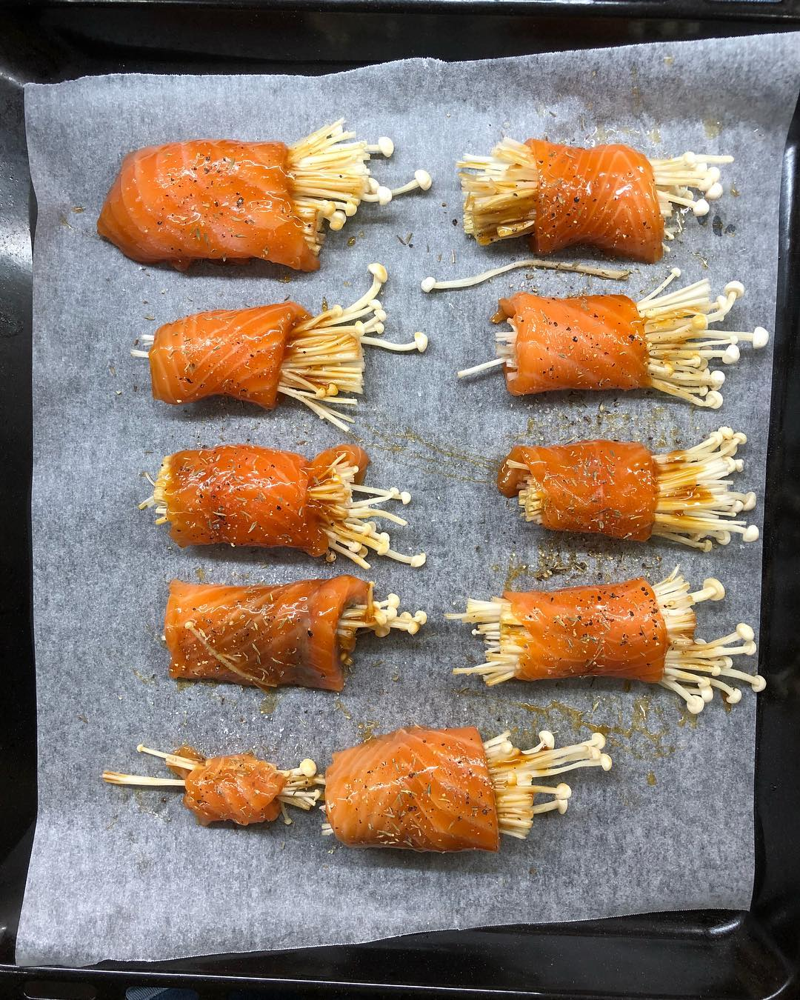
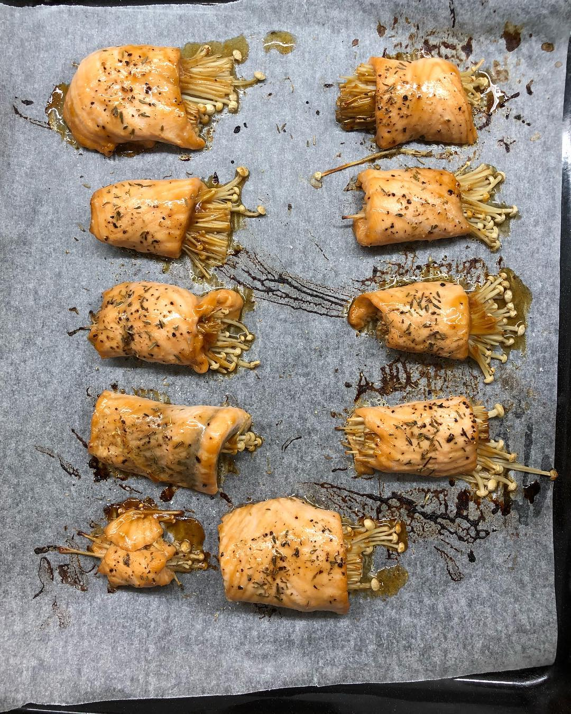

Dinner inspired by one of my (Lily’s) favorite dish from @sushiteisg 😊 - salmon enoki roll. Cooked for the first time - turned out to be very delicious 👌🏼 That’s what I did: marinated thin slices of salmon in teriyaki sauce for 30 min, wrapped enoki mushrooms with salmon, sprinkled rolls with salt, pepper, thyme and baked for 15 min at 200C. Hey @sushiteisg is anything missing? 😄 share your secret sauce 😉 — #cookathome #foodblog #omega3 #healthyrecipes #healthyfood #ironmantri #swimbikerun #triathlontraining #endurancetraining #homemadefood
2018-10-16 23:35:06
Back to main page